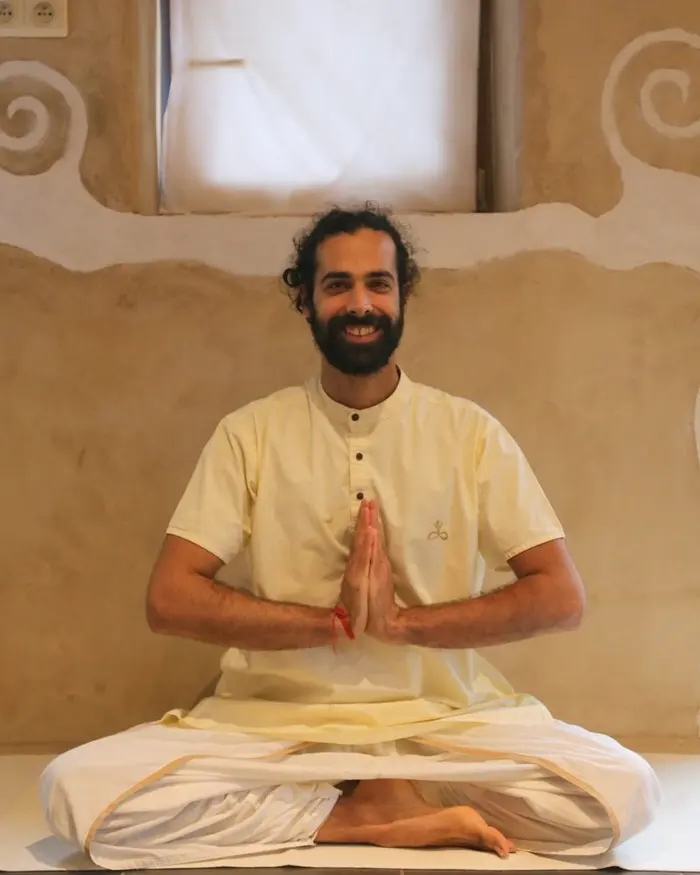

Hatha Yoga Classique · Jodoigne · Mardi 20h–21h

HATHA YOGA CLASSIQUE — Enseignant certifié Sadhguru Gurukulam · Isha Yoga Center, Inde (1750h / 21 semaines)
Et si le yoga n'était pas simplement une manière de s'étirer, de se détendre ou de faire du sport ?
Et si votre corps pouvait devenir un véritable support pour vivre avec davantage de stabilité et de présence ?
Le Hatha Yoga classique est une approche profonde et structurée du yoga, qui va bien au-delà de la pratique physique.
Dans la tradition yogique, le corps est considéré comme un véritable instrument. À travers les yogasanas, le travail du souffle et le développement de l'attention, la pratique vise à créer davantage d'équilibre, de stabilité et d'harmonie dans l'ensemble du système.
En tant qu'enseignant certifié par Sadhguru Gurukulam, j'ai été formé en Inde au Isha Yoga Center, dans le cadre d'une formation intensive et continue de 1 750 heures sur 21 semaines.
Vous n'avez pas besoin d'être souple, sportif ou expérimenté pour commencer. Il ne s'agit pas de réussir une posture, de rechercher la performance ou de se comparer aux autres. Vous venez simplement avec votre corps tel qu'il est aujourd'hui.
Au fil de la pratique, vous êtes invité à développer :
Le Hatha Yoga nous invite ainsi à ne pas seulement faire des postures, mais à expérimenter ce qui se produit lorsque le corps, le souffle et l'attention travaillent ensemble.
Pendant la pratique, nous prenons le temps de ralentir et de sortir, progressivement, du rythme habituel.
Pas besoin de performance. Pas besoin de comparaison. Pas besoin de chercher à « réussir » une posture.
Simplement être là, observer, respirer, pratiquer et expérimenter.
La régularité permet progressivement d'affiner la perception du corps, de mieux comprendre les postures et de développer une pratique plus stable et plus consciente. Le yoga devient alors un espace où l'on apprend à être pleinement présent à ce que l'on fait.
Pour toutes celles et ceux qui souhaitent :
Aucune expérience préalable n'est nécessaire. Vous n'avez pas besoin d'avoir une condition physique particulière ni de savoir pratiquer le yoga. Le plus important est simplement d'être prêt à expérimenter, observer et pratiquer avec attention.
Prenez le temps de revenir à vous. Laissez le corps se poser. Le souffle s'installer. L'attention se tourner vers l'intérieur. Et découvrez ce que peut devenir une pratique régulière lorsqu'elle ne consiste plus seulement à faire des postures, mais à habiter pleinement son corps et son expérience de la vie.
Le yoga ne se résume pas à ce que l'on peut en dire. Il commence véritablement lorsque vous prenez le temps de l'expérimenter par vous-même.
Pranam
Contact :
+32 483 63 95 27
www.yogasamskara.be
Mardi 20h à Jodoigne — Remplace cours Thierry Van Brabant
Aucun prérequis — ouvert à tous niveaux. Venez tel que vous êtes.
Tapis fournis sur place. Tenue souple conseillée.